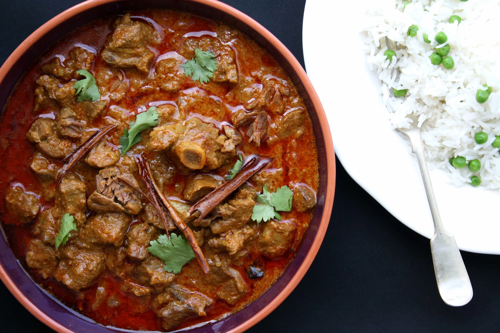
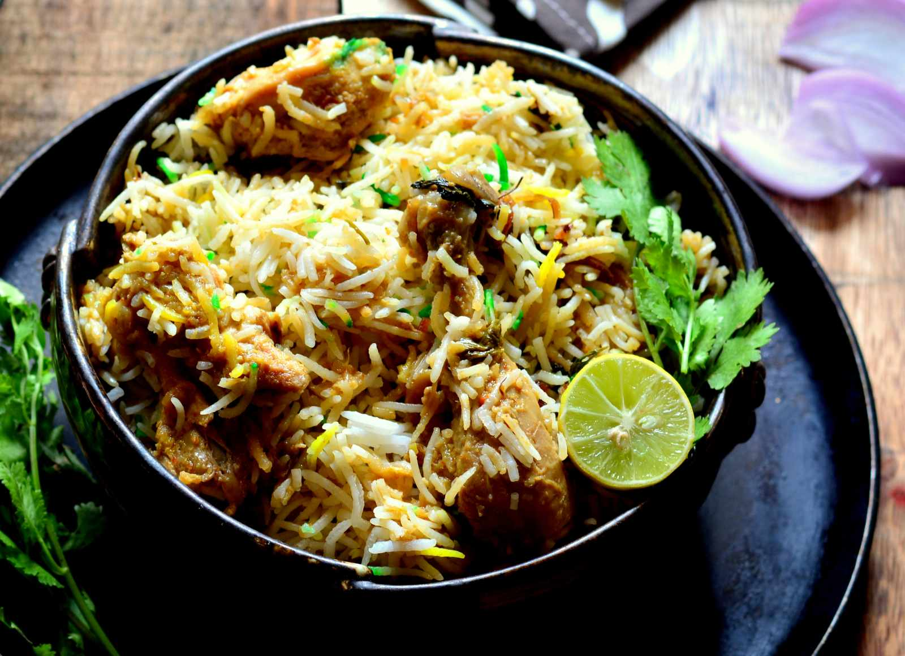
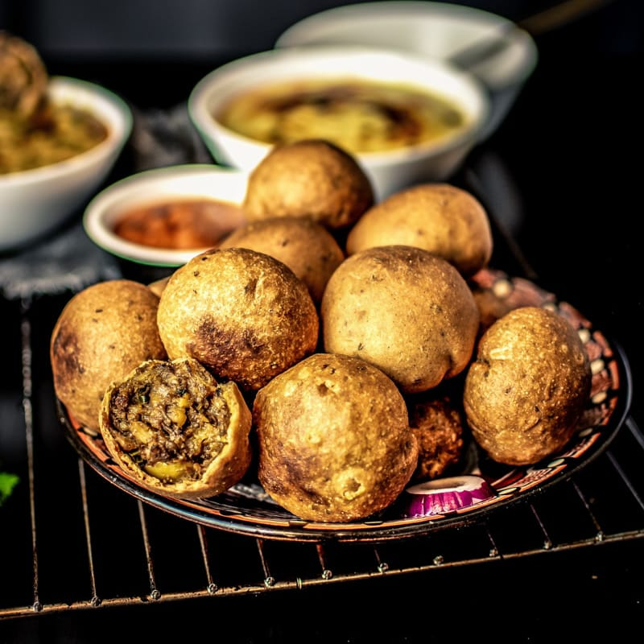

North Indian Foods
Chole Bhature

Chole bhature, also known as ‘channa bhatura’ is a North-Indian must-have. A combination of two dishes—chole, which is a spicy chickpea curry, and bhature, a type of fried bread made with maida—it makes for a meal that’s just right for Sunday afternoons, and should ideally be followed by a post-lunch snooze.
The food originated in the Northern regions of the Indian subcontinent, mainly in Uttar Pradesh. It is served as prasada by Hindus and Sikhs in the Indian states of Uttar Pradesh, Haryana, Punjab, Jammu, Himachal Pradesh, Uttarakhand, Bihar, and Madhya Pradesh. Halwa Poori is eaten at all times, but it is usually a part of breakfast and brunch.
Rogan Josh

Rogan josh consists of pieces of lamb or mutton braised with a gravy flavoured with garlic, ginger and aromatic spices (cloves, bay leaves, cardamom, and cinnamon), and in some versions incorporating onions or yogurt. After initial braising, the dish may be finished using the dampokhtak slow cooking technique. Its characteristic deep red colour traditionally comes from dried flowers or root of Alkanna tinctoria (ratan jot) and from liberal amounts of dried, deseeded Kashmiri chilies (lal mirch). These chilies, whose flavor approximates that of paprika, are considerably milder than the typical dried cayenne pepper of Indian cuisine. The recipe's spice emphasises aroma rather than heat. Saffron is also part of some traditional recipes.
Lucknowi Biryani

Awadhi chicken biryani or Lucknowi Biryani is either made of chicken or mutton. Foods from Awadhi cuisine are said to have been widely influenced by the Nawabs of Awadh, who were of the Persian origin. Their royal dishes werearomatic and delicious, flavored with spices, herbs, nuts, plant extracts and saffron.
Awadhi biryani is different from the Hydrabadi Biryani in terms of taste and flavors.
While most hyderabadi biryani recipes call for ground spices or Biryani Masala , awadhi
biryani is made with whole spices alone.
Butter Chicken

Butter Chicken was developed in the 1950s by Kundan Lal Jaggi, the founder of the Moti Mahal restaurant in Delhi, India.The curry was made "by chance" by mixing leftover tandoori chicken in a tomato gravy, rich in butter and cream.
Chicken is marinated for several hours in a mixture of lemon juice, dahi (yogurt), Kashmiri red chili, salt, garam masala and ginger garlic paste.
The marinated chicken is cooked in a tandoor (traditional clay oven), but may be grilled, roasted, or pan-fried. It is served in a mild curry sauce that includes butter. The sauce is a tomato- and garlic and ginger-based sauce that is simmered until smooth and much of the water has evaporated. There are many variations on the composition and spicing of the sauce, which is sieved so that it is velvety smooth. Spices may include cardamom, cumin, cloves, cinnamon, coriander, pepper, garam masala and fenugreek (Punjabi/Hindi: kasuri methi). Cream may be used in the sauce or as a garnish. Cashew paste may be used as a thickener and it is finally garnished with coriander.
Rajasthani Laal Maas

Laal Maas is a very popular non-veg recipe in Rajasthan. It is a fiery meat curry which is made with the combination of Kashmiri red chillies and other popular spices of Rajasthan. It is made in many ways but the authentic one is made with the use of dry red chillies.
Rajasthani Laal Maas is served with hot Phulkas, steamed rice or Baati. It is usually made during special occasions and festivals in Rajasthan.
Stuffed Bati

Masala Bati - Stuffed Masala Bati - Bharwa Masala Baati is a very popular Rajasthani dish. Masala Bati is a stuffed dumpling which is either deep fried or baked in a bati oven. This easy to make ‘masala baati’ is prepared with very basic ingredients, and tastes delectable.
Masala Bati or Bharwa Masala baati is a speciality from Rajasthani cuisine. This delicious stuffed dumpling is made using whole wheat flour (atta) and spicy potato filling (aloo ka masala). Masala Bati is either baked or deep-fried.